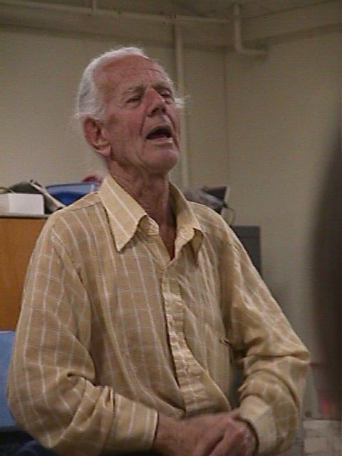

SJAA
Ephemeris
|
SJAA Ephemeris |
If You Missed John DobsonDave North |
The guy who started the revolution in cheap everyman telescopes, John Dobson, dropped by for a chat with the club May 9. If you were there, you hardly need to read this. If you weren't, you missed a lot of fun, controversy, and great stories.
 Though the entire evening was presented as a question and answer session, he deftly steered the answers in the direction he planned all along -- using a series of rhetorical devices. It was like watching a fan dance.
His talk broke down into four major categories: telescope making, public observing, cosmology, and philosophy. The level of controversy increased with each segment.
What is there to say about Dobson's telescope designs? It started with President Ed Erbeck's introduction (which John interrupted several times to add little anecdotes): the design is not practical or suitable for most amateur astronomers, according to the editors of Sky & Telescope some years back.
So much for their predictive skills.
John offered the additional opinion that white tubes are not good (just about any other color will do) since the titanium dioxide in them radiates infrared furiously, making them thermally inconsistent due to the cool sky and warm ground.
Of course, I paint my tubes white.
He further pointed out that a 3/4-inch thick ground board will generally not be sufficient for larger telescopes.
Of course, I use 3/4-inch ground boards.
And equally as critical is that you build the tube large enough to sleep in, when weather is inclement (you can't roll out of bed...)
I cannot quite get into my telescope tube.
Public astronomy is his bread and butter. He talked about putting on programs at Death Valley, the Grand Canyon, Crater Lake, and basically all over the world. He has appeared on the Tonight Show (twice at least) and proselytized Seeing The Universe just about everywhere *in* the universe.
A big part of it, he feels, is understanding something about what you're seeing. And that led him into section three: Cosmology.
He is not a big fan of the Big Bang, thinking there are too many holes and "fudge factors" in the model. He ironically says he predicted fifteen years ago that it would not last another ten years, and insists on sticking to the same schedule.
He raced through a Brief History Of Cosmology at a breakneck pace, pausing at some points to clarify while breezing through some other points as if they were self-evident (when they really weren't). As a scientific presentation it will hardly pass any test of rigor, but as an introductory primer it was easily digested and full of factual information (caveat emptor as to his conclusions).
He punctuated his explanations with some great quotes, such as Hawking's comment on superstring theory: "Astrology has a lot more going for it."
And his illustration of quantum tunneling was as elegant as any I've ever heard: "An electron simply ceases to exist in one place, and appears in another. It's like money in the bank: when it's transferred from Santa Barbara to San Francisco, no paper goes anywhere. It simply ceases to exist in the computer in Santa Barbara, and appears in the computer in San Francisco."
He personally favors a variation of Hoyle's Steady State Universe "with a governor on it," and offered other controversial views: photons do not exist -- there are merely emission and absorption events, etc. If you wanted to hear the details, you should have been there...
An astronomy club meeting hardly allows the latitude to establish the bona fides of his views, so we may simply register them as a statement of opinion with which the average cosmologist probably disagrees (Timothy Ferris' "The Whole Shebang" offers a readable counterpoint for those who wish to "do their homework" on the subject).
He wrapped up the presentation with a philosophical commentary on what all this means to him -- that inertia implies a tendency toward changelessness, that the structure of the universe as he sees it imply an infinite, and other observations.
Perhaps some people think this kind of speculation unwarranted or inappropriate in the astronomical setting, and perhaps they are right.
But there was no doubt at the end of the meeting that we had heard what John Dobson had to say about telescopes, astronomy, cosmology and philosophy. In that sense, he delivered 100 percent: he gave it all he had, for hours on end, with stamina, fortitude, dedication, thoughtfulness and commitment -- after having risen at five in the morning to make sure he was able to make the trip to the meeting from a monastery in the Sierras.
Agree or disagree, whether we find him outrageous or amusing or right, there is no doubt we owe him a resounding thanks for coming down and letting us get to know him first hand, and get a feel for the ideas and motives of a true revolutionary in amateur astronomy.
Thanks for dropping by, John. Come back any time. We'll keep a scope warm for you (and toss a blanket in...)
| Dave North; last updated: 1998 May 13 | Prev Next |